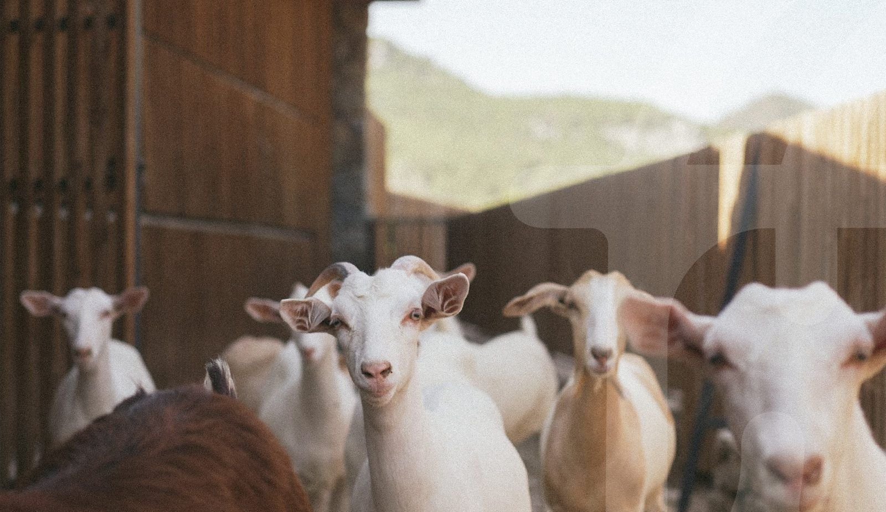
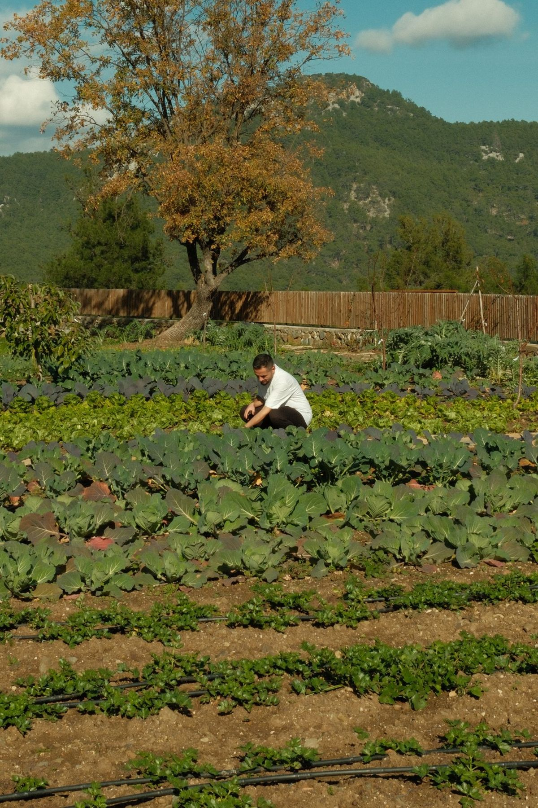
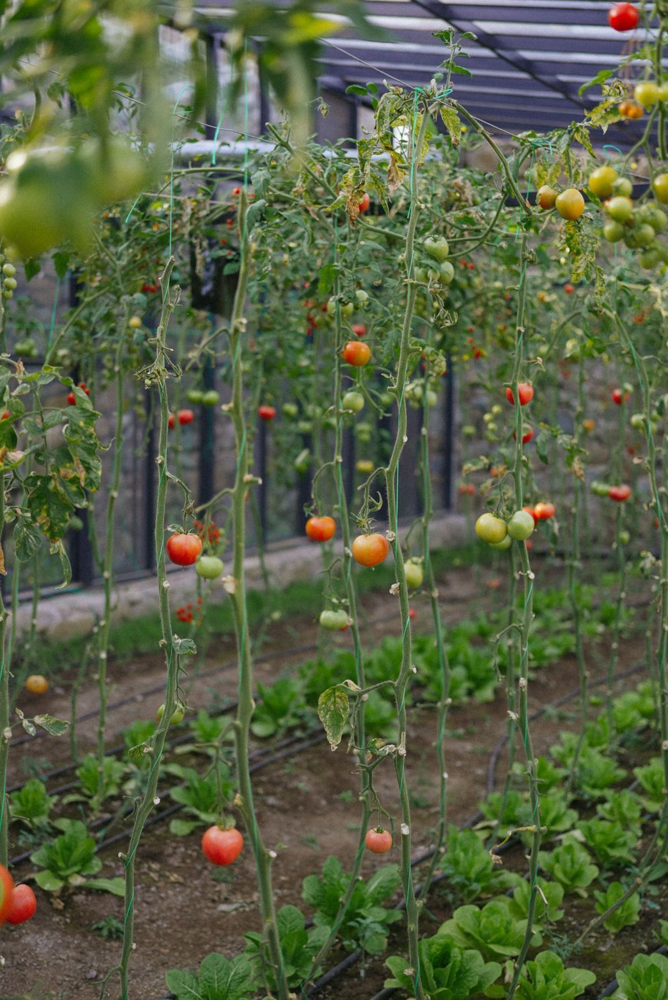
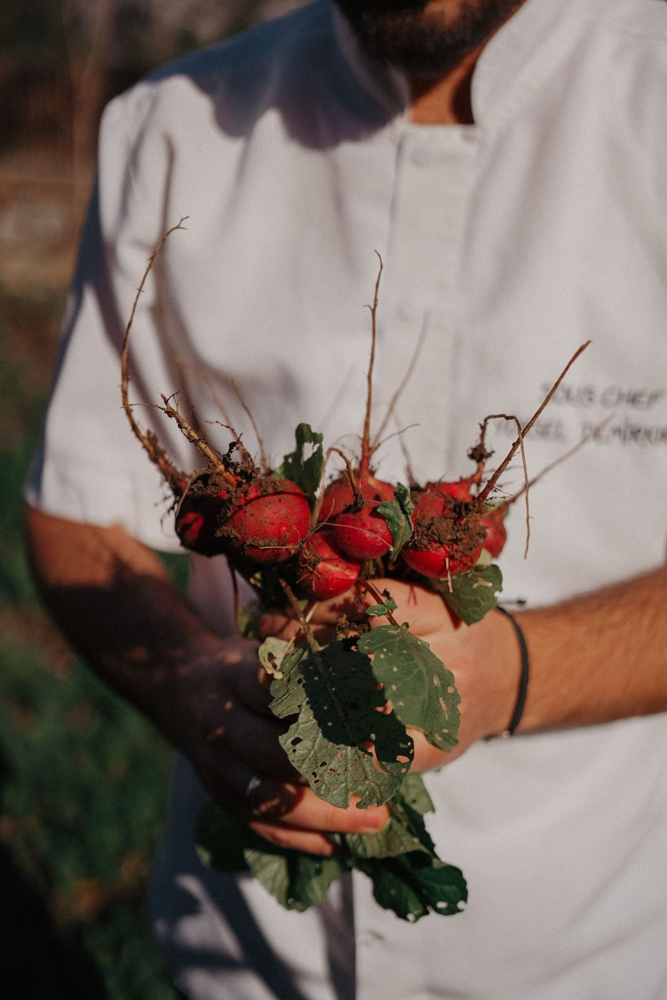
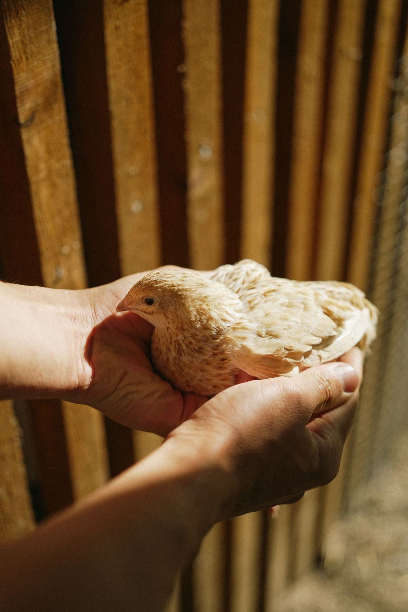
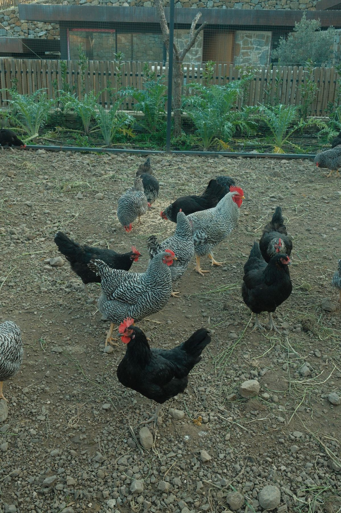
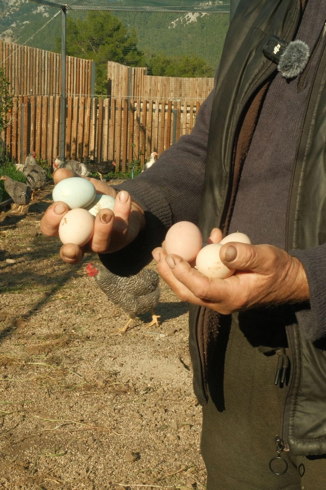

Buranın sınırlarını biz çizmedik, dağlar çizdi. Kimera'nın sofralarına ulaşan pek çok şeyin hikâyesi burada başlıyor.We didn't draw the borders here; the mountains did. The story of much that reaches Kimera's tables begins here.
Ziyaret talebiRequest a visitToprak kimseye danışmadan güzel şeyler yapar.The soil makes good things without asking anyone.
Topraktan çıkan domateslerin hiçbirinin şekli aynı değil. Bazıları küçük, bazıları yamuk, bazıları erken kızardı. Hepsini olduğu gibi topluyoruz. Düzeltmeye çalışmıyoruz. Ne veriyorsa, o.No two tomatoes out of the ground look the same. Some are small, some crooked, some turned red too early. We pick them all as they are. We don't try to fix them. Whatever it gives, that's it.
Toprağa neden döndüğümüzü biliyoruz: daha yavaş olmak, daha dikkatli dinlemek ve doğanın kendi hâlinde büyümesine alan açmak için. Zamanı biz değil, toprak belirliyor.We know why we came back to the soil: to be slower, to listen more carefully and to make room for nature to grow on its own terms. The soil sets the time, not us.

Gün, sürüye bakmadan başlamaz. Önce onlar doyar, sonra biz işe koyuluruz.The day doesn't start before we check on the herd. They eat first, then we get to work.

Kırmızı kendi vaktinde geliyor. Bahçede bugün olgunlaşanlar, yakında sofralarda.Red arrives in its own time. What ripens in the garden today will soon be on the table.

Buradan çıkan her şey bir hikâyeyle gidiyor Kimera'daki mutfağa. Bu toprak, bu ışık, bu sabır.Everything that leaves here goes to Kimera's kitchen with a story. This soil, this light, this patience.
Kimse kimseye talimat vermiyor.Nobody gives anybody orders.
Hayvanlarla aynı bahçeyi, aynı günü, aynı sessizliği paylaşıyoruz. Herkes kendi yerini biliyor.We share the same garden, the same day and the same quiet with the animals. Everyone knows their place.



Basit ama en sevdiğimiz iş.Simple, and our favourite job.
Burada üretilenler kahvaltıdan Erizo'daki akşam yemeğine kadar Kimera'nın mutfaklarında kullanılıyor. Mr. Pepper'ın yaz salatası da bu topraktan.What grows here is used in Kimera's kitchens, from breakfast to dinner at Erizo. Mr. Pepper's summer salad comes from this soil too.
- YetişenGrownMevsiminde sebze, meyve ve otlarVegetables, fruit and herbs in season
- GidenGoes toOlives kahvaltısı · Erizo · Mr. PepperOlives breakfast · Erizo · Mr. Pepper
- UzaklıkDistanceKimera'ya on dakikaTen minutes from Kimera
Ziyaret talebi oluşturun.Request a visit.
Çiftlik çalışan bir çiftlik; ziyaretleri önceden birlikte planlıyoruz. Tarihi ve kişi sayısını seçin, mesaj hazır gelsin.This is a working farm, so we plan visits together in advance. Choose a date and group size and the message is ready.